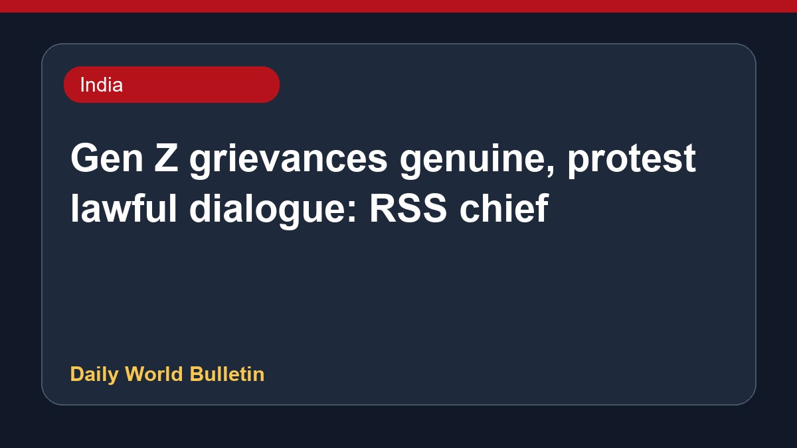

Gen Z grievances genuine, protest lawful dialogue: RSS chief

RSS chief Mohan Bhagwat stated that the grievances of Gen Z are genuine and described protests as a lawful method of dialogue and reaching consensus within a democracy, noting that such demonstrations do not make individuals anti-national. His remarks followed recent student stirs. Additionally, Prime Minister Narendra Modi and Israeli Prime Minister Benjamin Netanyahu reaffirmed their mutual commitment to strengthening bilateral cooperation between India and Israel. Further details regarding these developments are limited.
Original source: India News Sources
Gen Z’s grievance is genuine: RSS chief Mohan Bhagwat - The Hindu ↗
Gen Z’s grievance is genuine: RSS chief Mohan Bhagwat - The Hindu ↗